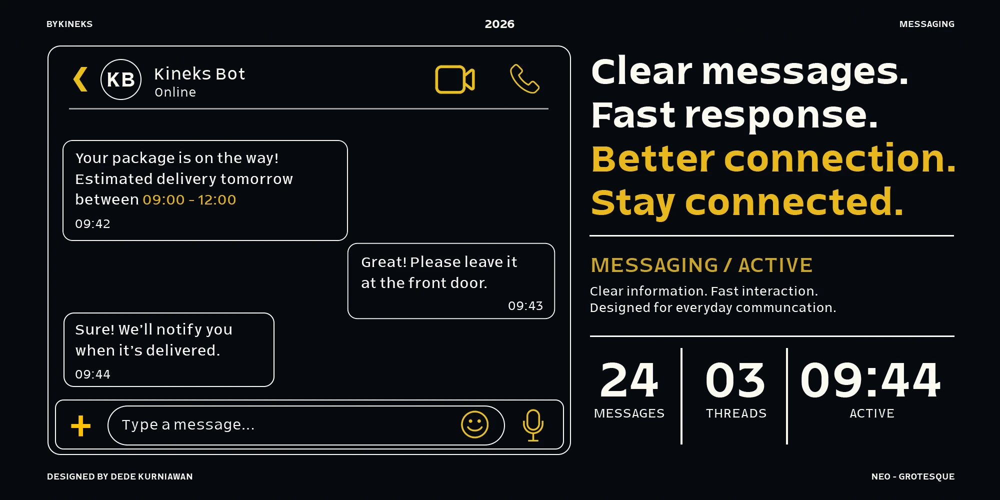
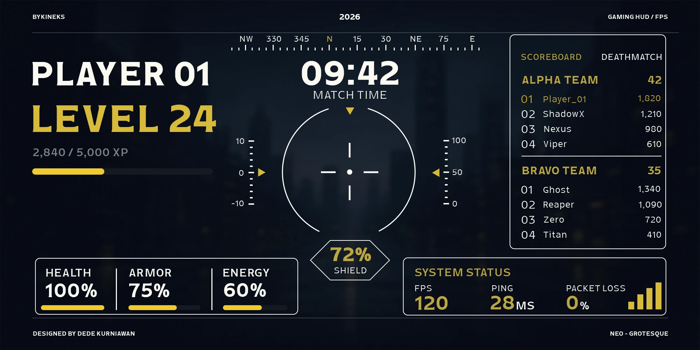
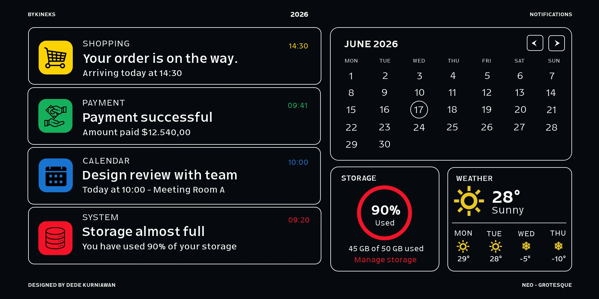
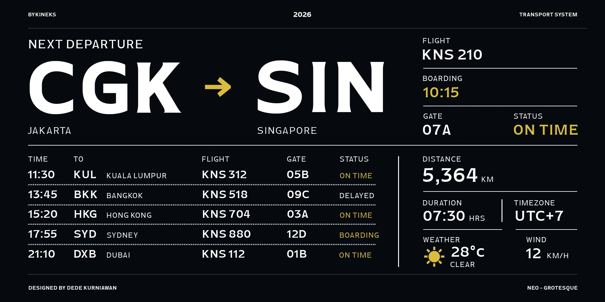
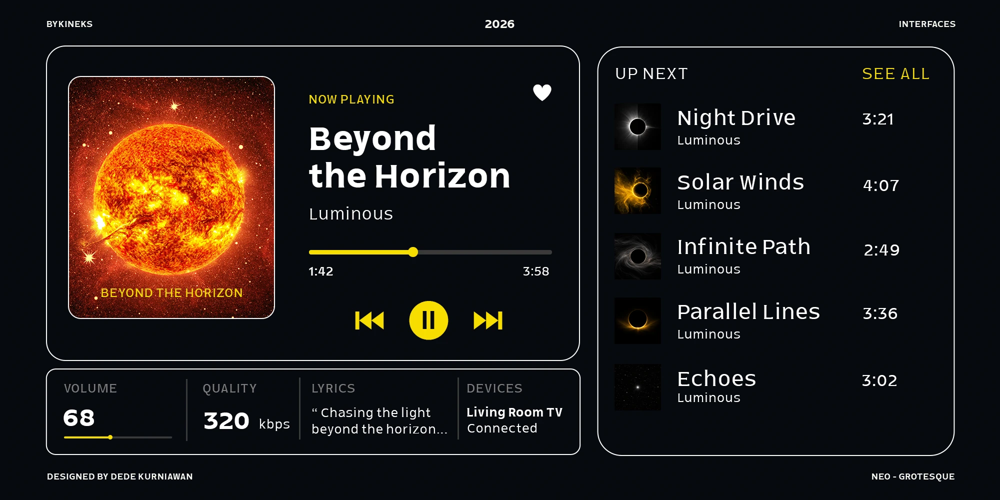
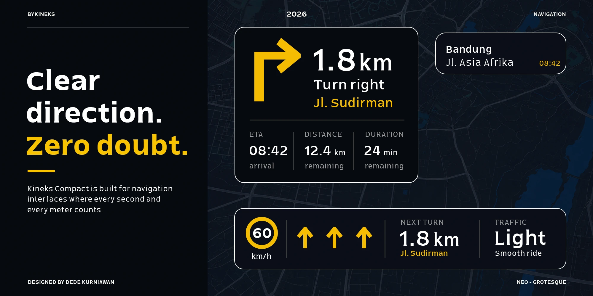

8 pt · Compact labels
Next departure · 09:42
Platform 04 — Central Station
On time · 12 min remaining
Clear information. Even when space is limited.
Kineks Compact is a neo-grotesque sans typeface designed for space-efficient digital interfaces and compact displays. It carries the visual DNA of the Kineks Type System into smaller, information-dense applications.
Compact proportions, controlled spacing and clear letterforms help organize navigation, notifications, dashboards and system information within limited space.
Ten styles, from Light to Bold with Upright and Oblique, offer a practical range for interface hierarchy. Explore continuous weight and slant with the variable font below.
Edit your own text. Weight, style and OpenType changes preserve your words. Alternate set 1 affects A, n and y; set 2 affects a and n.
Platform 04 — Central Station
On time · 12 min remaining
Last synced today at 09:42.
24 items · 128 MB available
Clear labels and a steady rhythm help readers find the information they need.






Encoded visible characters and verified ligature sequences from Kineks Compact. The study uses Regular, upright.

Explore licensing and the Kineks Compact family.